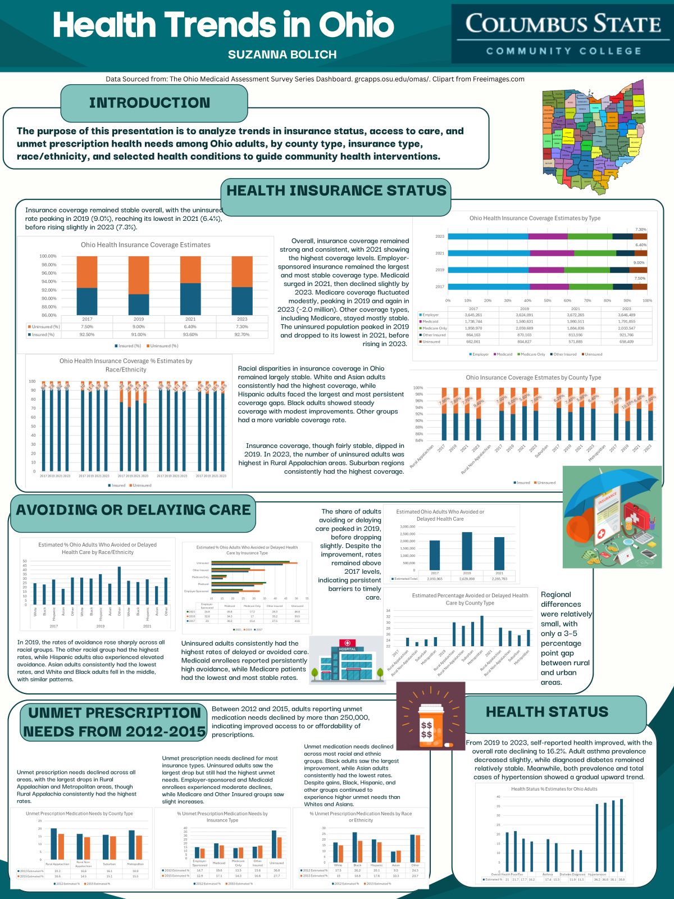
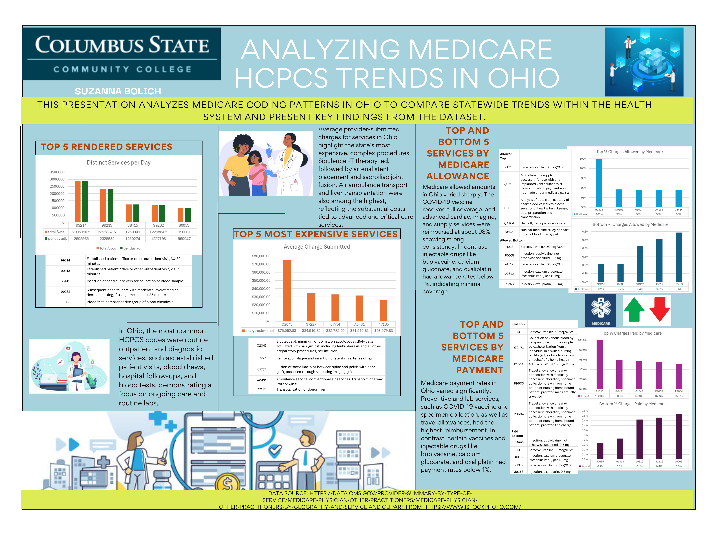
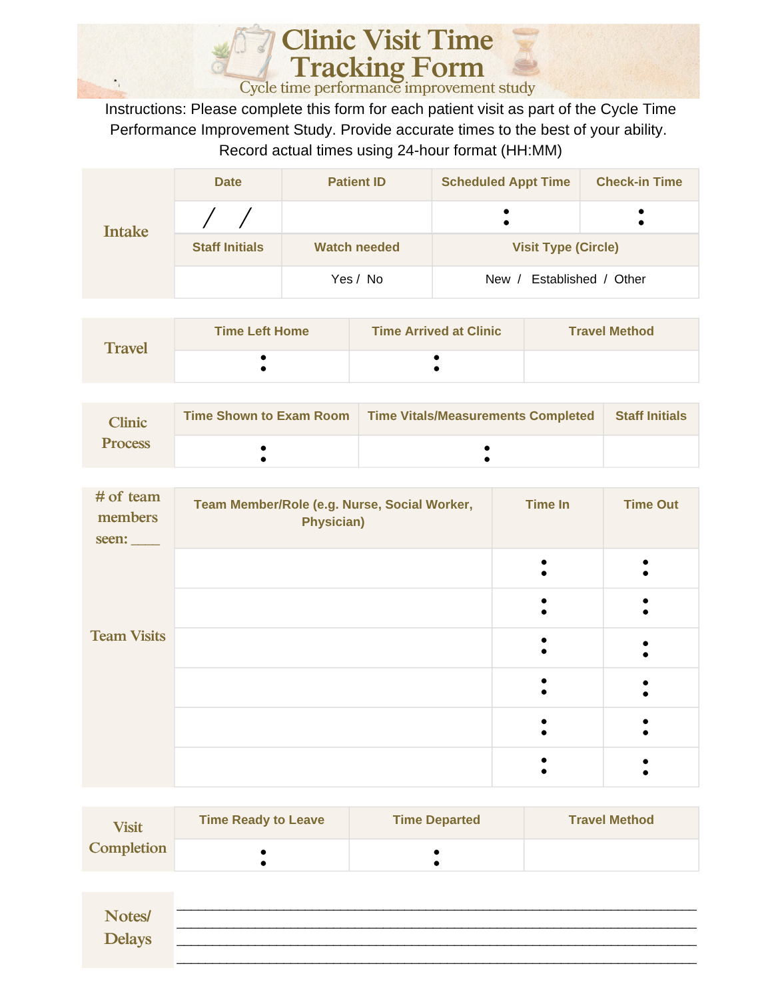

Healthcare Database Design & Implementation
CSCI-1320: Database Fundamentals | Autumn 2025
Project Overview
Designed and implemented a comprehensive healthcare database system in Microsoft Access to support inpatient clinical workflow and documentation. The database includes patient information, encounter data, diagnoses, procedures, consultations, and clinical outcomes tracking with HIPAA-compliant access controls and data integrity features.
Key Competencies Demonstrated
- Database Design: Normalized relational structure, primary/foreign keys, multi-table relationships
- Data Management: Structured data entry, lookup tables, calculated fields, data validation
- Workflow Support: Centralized switchboard for efficient navigation, standardized forms for data entry
- Reporting: Average Length of Stay reports, patient code summaries, quality assurance audits
- Compliance: UHDD standards compliance, data security principles, audit trails
- Technical Documentation: Clear presentation of technical specifications and functionality
Project Presentation Slides
Health Information Policies & Compliance
HIMT-1133: Legal Aspects of Health Information | Autumn 2024
Project Overview
Developed two comprehensive health information policies addressing Release of Information exceptions under HIPAA and 42 CFR Part 2. Both policies are professionally cited with federal regulations, state law, and include detailed procedures for healthcare organizations to ensure compliance and protect patient privacy.
Policy Documents
- Federal regulation citation and accurate legal interpretation
- State law integration (Ohio Revised Code)
- Clear organizational procedures and decision-making frameworks
- Patient notification and consent requirements
- Risk management and legal liability protection
Healthcare Data Analytics & Visualization
HIMT-2257: Health Statistics | Spring 2026 (Current)
Project Overview
Analyzed large healthcare datasets (Medicare, Medicaid) using statistical methods and data visualization tools. Created professional infographics for healthcare stakeholders to support decision-making in quality improvement, revenue cycle management, and population health planning.
Data Analysis Projects

Analysis 1: Medicaid Health Trends in Ohio
Comprehensive analysis of insurance status, access to care, and unmet healthcare needs among Ohio adults. Data organized by county type, insurance coverage, race/ethnicity, and health conditions to guide community health interventions.
Source: Ohio Medicaid Assessment Survey (OMAS)

Analysis 2: Medicare HCPCS Coding Trends in Ohio
Analyzed coding patterns for healthcare procedures and services in Ohio Medicare data. Identified top rendered services, most expensive services, and reimbursement trends to support revenue cycle and coding operations.
Source: CMS Provider Summary Data
Data Interpretation
Statistical analysis, trend identification, data quality assessment
Visualization
Chart creation, infographic design, professional presentation
Healthcare Context
Revenue cycle, coding systems, population health, quality metrics
Tools & Software
Excel, Power BI, statistical analysis, data visualization
Quality Improvement Project
Cycle Time Performance Improvement Study
Project Overview
Designed and implemented a clinic visit cycle time tracking study to identify bottlenecks and improve operational efficiency. Created standardized data collection form to capture accurate timing data across all stages of the patient visit process, from intake through departure.
Key Components Measured
- Intake Phase: Check-in time, staff initials, visit type identification
- Travel: Time leaving home, arrival at clinic, travel method
- Clinic Process: Time to exam room, vitals/measurements completion
- Team Interactions: Multidisciplinary team member involvement and timing
- Visit Completion: Readiness to leave, departure time
- Delays/Notes: Documentation of any delays or significant events

Clinic Visit Time Tracking Form
- Operational efficiency and workflow optimization
- Patient access and wait time reduction
- Resource planning and staffing decisions
- Quality of care and patient satisfaction
- Data-driven process improvement methods
Technical & Professional Skills
Demonstrated Competencies from Healthcare Informatics Projects
Healthcare Systems
EHR/EMR workflows, clinical documentation, HIPAA compliance, patient safety
Database Design
Relational models, data integrity, query design, reporting systems
Medical Coding
ICD-10-CM/PCS, CPT/HCPCS, DRG concepts, coding accuracy
Data Analytics
Statistical analysis, trend analysis, data visualization, dashboarding
Compliance & Privacy
HIPAA, 42 CFR Part 2, legal regulations, audit requirements
Quality Improvement
Process mapping, metrics design, cycle time analysis, workflow optimization
Software Proficiency
Microsoft Access, Excel, Power BI, SQL, data visualization tools
Professional Communication
Technical presentations, policy documentation, stakeholder reporting
Professional Credentials
- Degree: Associate of Applied Science, Health Information Management Technology
- Expected Graduation: May 2026 (Columbus State Community College)
- Certification: RHIT Exam Eligible (Registered Health Information Technician)
- Academic Recognition: Dean's List, all semesters (Cumulative GPA: 3.25)
- Practicum Experience: 56 hours OHIMA Virtual Internship Program